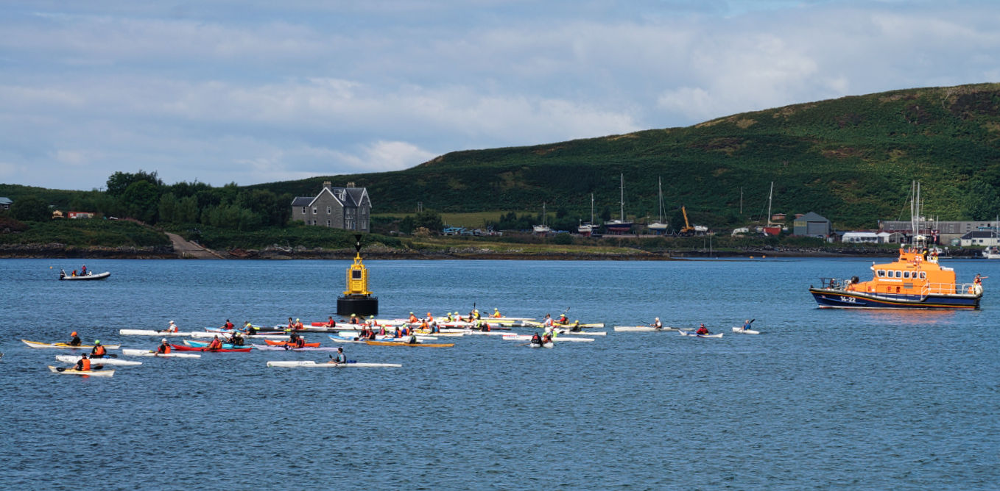

Oban
It was one of those late summer weekends with beautiful warm weather and almost no wind. Amazing, but also a bit hazardous if planning to go to the west coast as the midges might be tempted to come out in full force and feast on any uncovered skin they can find. Luckily we were planning on a coastal adventure, so hopefully a little breeze could be found to keep the midges away.
We had found a spot to put in on google maps with a nearby overnight parking possibility for the car that worked out well in reality. The town of Benderloch had a nice sunny terrace, where we had a coffee and tea to recover from the drive and anticipate the adventure ahead.

Destination for Saturday night was Lismore island, an island located in the Great Glen fault. To be more precise, the destination was not the island itself, but two tiny little islands nearby. We had spotted them on Google Maps. They seemed to be connected by a long beach, with the ocean at high tide leaving just the very top of this beach uncovered, the rest would be filled in from both sides. It seemed like an idyllic spot for a night of camping.

The paddle over to our island was beautiful, and a first for me to see a sea eagle in Scotland. It was sitting on a rock, and it was so large that for the longest time I thought there was a human with a large head (head = beak of bird), but when the wings came out to start flying I had to quickly adjust my assumptions. Accompanied by some seals we made it to our island.
This part of Scotland is so different from the areas closer to home where we normally are. For example we found limestone, which I still associate with Vietnam and have not seen further up north in Scotland. There also seems to be more trees in this area.
The islands definitely met expectations. On the most northern of the two connected islands we found a rock formation, that, on closer inspection, could be climbed on from the north east, providing an amazing panorama with Oban in the distance, the Great Glen behind us, and the straight of Mull opening up in front, guarded by 2 lighthouses that we were able to see from our tent as well.

Just as we were getting ready to sleep, a sailing boat came along and anchored right in front of us, providing idyllic photos, but also making it quite a bit more work to go for a quick pee.

After a good night of sleep, it was time to head back early because it was racing day in Oban. The eagle was not yet on his post, and we paddled calmly back to the car from where it was a few more kms drive into Oban. Right in front of Oban is the island Kerrera, and this was the scene for a kayak race with surf skis and touring kayaks. I was going to join, while Leigh was going to support and then shop in Oban when I would disappear from view. The race route was easy, keep Kerrera on your right and stay out of the way of ferries, until back in the harbour, a loop of 20 km. No problem. After a count down, off we went.

I’ve never really raced before in a kayak, the principles seemed simple: paddle as hard as you can over as little as possible distance as you can. But I soon found out there is more to consider. Try to be smart with energy, keep hydrated (it was a warm sunny day) and get your skeg management right. I have a skeg that I can adjust, and when it’s down my boat goes straighter but there is more water resistance, whereas when I have it up (not in the water) it is sometimes difficult to keep straight and I have to cover more distance because I wobble due to currents around rocks for example, which slows me down. But, there is less water resistance. While I was racing I must have adjusted my skeg about 50 times while I tried to go as close to the rocks of Kerrera as seemed sensible and cover as little distance as possible. Also to consider was the tidal current, when going in the same direction as the tide it might be better to be a bit further away from the shore because there is a stronger tidal current there, or there could be a back eddy near the rocks that slows me down. So sometimes the longest way is the shortest way. I managed to overtake a few people, and got overtaken by a few as well. I finished in a time I was happy with, and I always find it fun to race, so had a great time.
I expected to be a lot slower then I was, so when I messaged Leigh that I was already finished, he was still in Oban in line for a famous crab sandwich and completely missed my sprint to the finish line. Not a problem, it was nice and sunny, and when Leigh finally got his sandwich I had already accepted my first prize in the women's touring category, the Oban lifeboat cup (proceeds of the race went to the lifeboat). I have to admit, that I also came in last in my category, because apparently only men like to race with their kayaks. Oh well, I was happy with my time anyway, and had some nice chats with fellow paddlers.
The day had flown by, it was time for the long drive back to Inverness. In summer dress, shorts, T-shirt and sandals we arrived back home a couple of hours later to a 13 degrees cold and rainy Inverness, but with good memories from a warm fun summery weekend on the water.